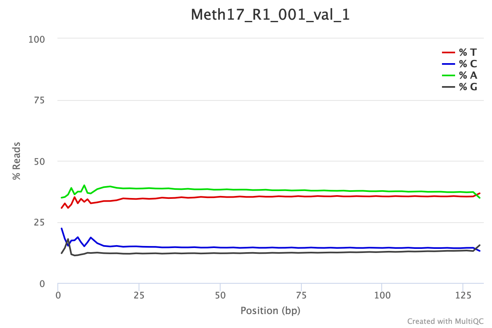

The purpose of this tutorial is to provide an example of taking Bisulfite treated DNA sequence data through identification of methylation at the loci and gene level. The principle behind creating bisulfite treated DNA libraries is that when cytosines are not methylated they will be converted to uracil, which ultimately result in thymine. When aligning to a reference genome the percent methylation at a given CpG loci is determined by examine the ratio to thymines and cytosines. For example if there is a given CpG loci with 30% of the alignment with the cytosine on the reference being and thymine, one would consider this cytosine loci (CpG) to be 70% methylated.
For a good review of epigenetic mechanisms including DNA methylation in marine organisms see Eirin-Lopez and Putnam (2019). Trigg et al. (2022) offers a comparison of three methods for quantifying DNA methylation at single base-pair resolution using whole genome bisulfite sequencing (WGBS), reduced representation bisulfite sequencing (RRBS), and methyl-CpG binding domain bisulfite sequencing (MBDBS). The tutorial below is based on WGBS, though the general workflow would be consistent.
An example of what raw data might look like from a marine invertebrate is shown. Note that DNA methylation patters are diverse across taxa with most marine invertebrates demonstrating a mosiac pattern and global methylation at CpG loci is approximately 15%.
Following trimming one would expect to see something similar to this. This particular data set was trimmed with the following parameters:
/gscratch/srlab/programs/TrimGalore-0.4.5/trim_galore \
--output_dir /gscratch/scrubbed/strigg/analyses/20200311/WGBS_MBD \
--paired \
--fastqc_args \
--outdir /gscratch/scrubbed/strigg/analyses/20200311/WGBS_MBD/FASTQC \
--threads 28 \
--illumina \
--clip_R1 10 \
--clip_R2 10 \
--three_prime_clip_R1 10 \
--three_prime_clip_R2 10 \
--path_to_cutadapt /gscratch/srlab/programs/miniconda3/bin/cutadapt \
/gscratch/scrubbed/sr320/froger-raw/00_fastq/Meth17_R1_001.fastq.gz \
The software used as part of this tutorial is Bismark Bisulfite Mapper. As with any software it is best to be famililar with the User Manual. Thus content below will provided with the assumption that the reader has read the manual and is meant to serve as guidance based on experience working with marine invertebrates.
The first step in the process in preparing the genome. Example code:
# Directories and programs
bismark_dir="/programs/Bismark-0.21.0"
bowtie2_dir="/programs/bowtie2-2.3.4.1-linux-x86_64/"
genome_folder="/where/the/fastafile/lives/"
${bismark_dir}/bismark_genome_preparation \
--verbose \
--parallel 28 \
--path_to_aligner ${bowtie2_dir} \
${genome_folder}You should expect to prepared genome with new directories indluding
./Bisulfite_Genome
./Bisulfite_Genome/GA_conversion
./Bisulfite_Genome/CT_conversionFor doing the alignment of the trim reads to the genome the following code structured is used
find ${reads_dir}*_R1_001_val_1.fq.gz \
| xargs basename -s _R1_001_val_1.fq.gz | xargs -I{} ${bismark_dir}/bismark \
--path_to_bowtie ${bowtie2_dir} \
-genome ${genome_folder} \
-p 4 \
-score_min L,0,-0.6 \
--non_directional \
-1 ${reads_dir}{}_R1_001_val_1.fq.gz \
-2 ${reads_dir}{}_R2_001_val_2.fq.gz \
-o Mcap_tgThis will create bam files (sequence alignment files)
Files are then deduplicated if they are whole genome bisulfite treated samples. This command will deduplicate the Bismark alignment BAM file and remove all reads but one which align to the the very same position and in the same orientation. This step is recommended for whole-genome bisulfite samples, but should not be used for reduced representation libraries such as RRBS, amplicon or target enrichment libraries.
find *.bam | \
xargs basename -s .bam | \
xargs -I{} ${bismark_dir}/deduplicate_bismark \
--bam \
--paired \
{}.bamMethylation levels are then extracted using the
bismark_methylation_extractor. For example:
${bismark_dir}/bismark_methylation_extractor \
--bedGraph \
--counts \
--comprehensive \
--merge_non_CpG \
--multicore 28 \
--buffer_size 75% \
*deduplicated.bamThis will create a file with the suffix
deduplicated.bismark.cov.gz (example shown below in
uncompressed format). And while a bedGraph file is generated, in this
workflow a bedGraph will be generated later that uses information from
merged strands (as opposed to this output).
NC_035784.1 141 141 37.5 3 5
NC_035784.1 142 142 100 2 0
NC_035784.1 155 155 70 7 3
NC_035784.1 156 156 100 2 0
NC_035784.1 291 291 0 0 2
NC_035784.1 292 292 0 0 3
NC_035784.1 313 313 0 0 1
NC_035784.1 314 314 66.6666666666667 2 1
NC_035784.1 470 470 66.6666666666667 4 2
NC_035784.1 611 611 0 0 4column organization of the file
<chromosome> <start position> <end position> <methylation percentage> <count methylated> <count unmethylated>A genome-wide cytosine report is generated, with this code as an example:
find *deduplicated.bismark.cov.gz \
| xargs basename -s _trimmed_bismark_bt2.deduplicated.bismark.cov.gz \
| xargs -I{} ${bismark_dir}/coverage2cytosine \
--genome_folder ${genome_folder} \
-o {} \
--merge_CpG \
--zero_based \
{}_trimmed_bismark_bt2.deduplicated.bismark.cov.gzGenerating a file
.CpG_report.merged_CpG_evidence.cov
NC_035785.1 217 219 100.000000 17 0
NC_035785.1 523 525 87.500000 7 1
NC_035785.1 556 558 50.000000 5 5
NC_035785.1 727 729 100.000000 16 0
NC_035785.1 1330 1332 0.000000 0 2
NC_035785.1 1403 1405 0.000000 0 2
NC_035785.1 1494 1496 66.666667 2 1
NC_035785.1 1747 1749 100.000000 8 0
NC_035785.1 2024 2026 100.000000 24 0
NC_035785.1 2054 2056 93.333333 14 1From here it could be useful to do some simple file reorganizaion to obtain bedgraph or tab files for downstream analysis (eg bedtools, GLMs).
#creating bedgraphs post merge
for f in *merged_CpG_evidence.cov
do
STEM=$(basename "${f}" .CpG_report.merged_CpG_evidence.cov)
cat "${f}" | awk -F $'\t' 'BEGIN {OFS = FS} {if ($5+$6 >= 10) {print $1, $2, $3, $4}}' \
> "${STEM}"_10x.bedgraph
done
for f in *merged_CpG_evidence.cov
do
STEM=$(basename "${f}" .CpG_report.merged_CpG_evidence.cov)
cat "${f}" | awk -F $'\t' 'BEGIN {OFS = FS} {if ($5+$6 >= 5) {print $1, $2, $3, $4}}' \
> "${STEM}"_5x.bedgraph
done
#creating tab files with raw count for glms
for f in *merged_CpG_evidence.cov
do
STEM=$(basename "${f}" .CpG_report.merged_CpG_evidence.cov)
cat "${f}" | awk -F $'\t' 'BEGIN {OFS = FS} {if ($5+$6 >= 10) {print $1, $2, $3, $4, $5, $6}}' \
> "${STEM}"_10x.tab
done
for f in *merged_CpG_evidence.cov
do
STEM=$(basename "${f}" .CpG_report.merged_CpG_evidence.cov)
cat "${f}" | awk -F $'\t' 'BEGIN {OFS = FS} {if ($5+$6 >= 5) {print $1, $2, $3, $4, $5, $6}}' \
> "${STEM}"_5x.tab
doneIt is sometimes useful to sort BAM files for downstream analysis (eg methylkit, IGV)
# Sort files for methylkit and IGV
find *.bam | \
xargs basename -s .bam | \
xargs -I{} ${samtools} \
sort --threads 28 {}.bam \
-o {}.sorted.bam
# Index sorted files for IGV
find *.sorted.bam | \
xargs basename -s .sorted.bam | \
xargs -I{} ${samtools} \
index -@ 28 {}.sorted.bam